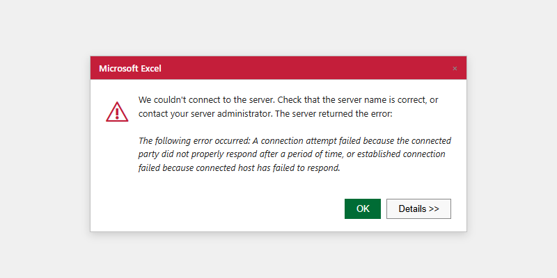

Excel Connection Problems

What this covers
Diagnosing and resolving connection failures when connecting Microsoft Excel to Tessallite via the XMLA endpoint. For the connection setup procedure, see Excel XMLA Connection Guide.
Pre-connection checklist
Before troubleshooting, verify:
- Port 8080 is reachable from this machine. Test the URL published by your administrator; use
http://HOST:8080/api/v1/xmla/whenGATEWAY_XMLA_TLS_ENABLED=false, orhttps://HOST:8080/api/v1/xmla/when it istrue. - You have the workspace slug (obtain from your Tenant Admin — it is case-sensitive).
- You have valid Tessallite credentials (email address and password).
- You know the project name and model name you intend to query.
Symptom reference
| Symptom | Likely cause | Resolution |
|---|---|---|
| "We couldn't connect to the Analysis Services server" | Wrong URL format | URL must include /api/v1/xmla/ and its trailing slash. Select http:// or https:// from GATEWAY_XMLA_TLS_ENABLED and any reverse-proxy configuration; being on the gateway host does not select the scheme. |
| Same error, URL format correct and host running | Scheme does not match how the gateway is published | The gateway serves either plain HTTP or TLS, not both. Check GATEWAY_XMLA_TLS_ENABLED and any reverse proxy. A TLS listener does not answer http://, and a plain-HTTP listener does not answer https://. Confirm the published URL with your System Administrator. |
| Same error with correct URL | Port 8080 blocked or Gateway not running | Test the published URL with curl -v. If it is refused, escalate to your System Administrator to check the Gateway service and firewall. |
| "The catalog name is invalid" | Wrong workspace slug or wrong case | Verify slug with Tenant Admin. Slug is case-sensitive. |
| "The user name or password is incorrect" | Wrong Tessallite credentials or repeated retries reached a login governor | Stop retrying. Confirm you are using the dedicated read-only Tessallite account, not database or administrator credentials. Ask the Tenant Admin to verify the account before another attempt. |
| "No cubes were found" | No published model in the project | Ask Modeller to publish the model in Model Builder. |
| Data looks stale | Aggregate not refreshed | Ask Modeller to check aggregate status and run a refresh if status is Stale. |
| Every wizard step and refresh pauses for 15-45 seconds, then "the query could not be executed" | Excel is reaching a containerised gateway through localhost, so the Windows OLE DB stack waits on the container loopback path while nothing is happening at the gateway | Reconnect using the machine's own IPv4 address (ipconfig) instead of localhost, and save the password when Excel offers it so it does not re-prompt on every new session. The same connection through the machine address responds immediately. |
| Excel shows error after previously working | Stale cached connection | Data → Queries & Connections → Delete connection → reconnect from scratch. |
| Refresh spins (hourglass) after reopening a saved PivotTable workbook | Excel's native MSOLAP credential dialog opened minimised or behind the workbook | This is Microsoft Excel / OLE DB UI, not Tessallite. Alt+Tab or minimise Excel to find the password/catalog dialog, complete it, then retry Refresh. Excel does not normally retain the password. Saving it stores the credential in the workbook or connection file, so do this only for a dedicated read-only account on a controlled presentation machine. Never save an administrator credential. |
Testing the XMLA endpoint directly
From a terminal on the same machine as Excel, test the scheme selected by GATEWAY_XMLA_TLS_ENABLED and any reverse proxy:
curl -v http://HOST:8080/api/v1/xmla/ # GATEWAY_XMLA_TLS_ENABLED=false
curl -vk https://HOST:8080/api/v1/xmla/ # GATEWAY_XMLA_TLS_ENABLED=trueAny HTTP response (even a server-side error) confirms the port is reachable. A timeout or "connection refused" is a network or service issue, not an Excel configuration issue.